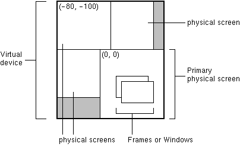

public class Frame extends Window
Frame is a top-level window with a title and a border.
The size of the frame includes any area designated for the
border. The dimensions of the border area may be obtained
using the getInsets method, however, since
these dimensions are platform-dependent, a valid insets
value cannot be obtained until the frame is made displayable
by either calling pack or show.
Since the border area is included in the overall size of the
frame, the border effectively obscures a portion of the frame,
constraining the area available for rendering and/or displaying
subcomponents to the rectangle which has an upper-left corner
location of (insets.left, insets.top), and has a size of
width - (insets.left + insets.right) by
height - (insets.top + insets.bottom).
The default layout for a frame is BorderLayout.
A frame may have its native decorations (i.e. Frame
and Titlebar) turned off
with setUndecorated. This can only be done while the frame
is not displayable.
In a multi-screen environment, you can create a Frame
on a different screen device by constructing the Frame
with Frame(GraphicsConfiguration) or
Frame(String title, GraphicsConfiguration). The
GraphicsConfiguration object is one of the
GraphicsConfiguration objects of the target screen
device.
In a virtual device multi-screen environment in which the desktop area could span multiple physical screen devices, the bounds of all configurations are relative to the virtual-coordinate system. The origin of the virtual-coordinate system is at the upper left-hand corner of the primary physical screen. Depending on the location of the primary screen in the virtual device, negative coordinates are possible, as shown in the following figure.

In such an environment, when calling setLocation,
you must pass a virtual coordinate to this method. Similarly,
calling getLocationOnScreen on a Frame
returns virtual device coordinates. Call the getBounds
method of a GraphicsConfiguration to find its origin in
the virtual coordinate system.
The following code sets the
location of the Frame at (10, 10) relative
to the origin of the physical screen of the corresponding
GraphicsConfiguration. If the bounds of the
GraphicsConfiguration is not taken into account, the
Frame location would be set at (10, 10) relative to the
virtual-coordinate system and would appear on the primary physical
screen, which might be different from the physical screen of the
specified GraphicsConfiguration.
Frame f = new Frame(GraphicsConfiguration gc);
Rectangle bounds = gc.getBounds();
f.setLocation(10 + bounds.x, 10 + bounds.y);
Frames are capable of generating the following types of
WindowEvents:
WINDOW_OPENED
WINDOW_CLOSING
WINDOW_CLOSED
WINDOW_ICONIFIED
WINDOW_DEICONIFIED
WINDOW_ACTIVATED
WINDOW_DEACTIVATED
WINDOW_GAINED_FOCUS
WINDOW_LOST_FOCUS
Clarifications
For more information, see
Profile-specific properties.
java.awt.Window.
Frame are initially created in
"windowed" mode. See:
Frame
are under the control of the window management system. Method calls
to change these properties are requests (not directives) which are
forwarded to the window management system. As a result:
isUndecorated().
See:
getTitle().
See:
isResizable().
See:
Restrictions
Frame is
permitted per GraphicsDevice. Attempts to
construct a second Frame will cause the constructor to throw
java.lang.UnsupportedOperationException. See:
Frame()
Frame(GraphicsConfiguration)
Frame(String)
Frame(String, GraphicsConfiguration)
Frame.readObject()
WindowEvent,
Window.addWindowListener(java.awt.event.WindowListener),
Serialized Form| Modifier and Type | Field and Description |
|---|---|
static int |
ICONIFIED
This state bit indicates that frame is iconified.
|
static int |
NORMAL
Frame is in the "normal" state.
|
BOTTOM_ALIGNMENT, CENTER_ALIGNMENT, LEFT_ALIGNMENT, RIGHT_ALIGNMENT, TOP_ALIGNMENTABORT, ALLBITS, ERROR, FRAMEBITS, HEIGHT, PROPERTIES, SOMEBITS, WIDTH| Constructor and Description |
|---|
Frame()
Constructs a new instance of
Frame that is
initially invisible. |
Frame(GraphicsConfiguration gc)
Create a
Frame with the specified
GraphicsConfiguration of
a screen device. |
Frame(String title)
Constructs a new, initially invisible
Frame object
with the specified title. |
Frame(String title,
GraphicsConfiguration gc)
Constructs a new, initially invisible
Frame object
with the specified title and a
GraphicsConfiguration. |
| Modifier and Type | Method and Description |
|---|---|
Image |
getIconImage()
Gets the image to be displayed in the minimized icon
for this frame.
|
int |
getState()
Gets the state of this frame.
|
String |
getTitle()
Gets the title of the frame.
|
boolean |
isResizable()
Indicates whether this frame is resizable by the user.
|
boolean |
isUndecorated()
Indicates whether this frame is undecorated.
|
protected String |
paramString()
Returns a string representing the state of this
Frame. |
void |
setIconImage(Image image)
Sets the image to be displayed in the minimized icon for this frame.
|
void |
setResizable(boolean resizable)
Sets whether this frame is resizable by the user.
|
void |
setState(int state)
Sets the state of this frame.
|
void |
setTitle(String title)
Sets the title for this frame to the specified string.
|
void |
setUndecorated(boolean undecorated)
Disables or enables decorations for this frame.
|
addWindowFocusListener, addWindowListener, dispose, getFocusableWindowState, getFocusCycleRootAncestor, getFocusOwner, getFocusTraversalKeys, getGraphicsConfiguration, getInputContext, getLocale, getMostRecentFocusOwner, getToolkit, getWarningString, getWindowFocusListeners, getWindowListeners, isActive, isFocusableWindow, isFocusCycleRoot, isFocused, isShowing, pack, processEvent, processWindowEvent, processWindowFocusEvent, removeWindowFocusListener, removeWindowListener, setCursor, setFocusableWindowState, setFocusCycleRoot, show, toBack, toFrontadd, add, add, add, add, addContainerListener, addImpl, areFocusTraversalKeysSet, doLayout, findComponentAt, findComponentAt, getAlignmentX, getAlignmentY, getComponent, getComponentAt, getComponentAt, getComponentCount, getComponents, getContainerListeners, getFocusTraversalPolicy, getInsets, getLayout, getMaximumSize, getMinimumSize, getPreferredSize, invalidate, isAncestorOf, isFocusCycleRoot, isFocusTraversalPolicySet, list, list, paint, paintComponents, print, printComponents, processContainerEvent, remove, remove, removeAll, removeContainerListener, setFocusTraversalKeys, setFocusTraversalPolicy, setFont, setLayout, transferFocusBackward, transferFocusDownCycle, update, validate, validateTreeaddComponentListener, addFocusListener, addInputMethodListener, addKeyListener, addMouseListener, addMouseMotionListener, addMouseWheelListener, addNotify, addPropertyChangeListener, checkImage, checkImage, coalesceEvents, contains, contains, createImage, createImage, createVolatileImage, createVolatileImage, disableEvents, dispatchEvent, enableEvents, enableInputMethods, firePropertyChange, getBackground, getBounds, getBounds, getColorModel, getComponentListeners, getCursor, getFocusListeners, getFocusTraversalKeysEnabled, getFont, getFontMetrics, getForeground, getGraphics, getHeight, getIgnoreRepaint, getInputMethodListeners, getInputMethodRequests, getKeyListeners, getLocation, getLocation, getLocationOnScreen, getMouseListeners, getMouseMotionListeners, getMouseWheelListeners, getName, getParent, getPropertyChangeListeners, getSize, getSize, getTreeLock, getWidth, getX, getY, hasFocus, imageUpdate, isBackgroundSet, isCursorSet, isDisplayable, isDoubleBuffered, isEnabled, isFocusable, isFocusOwner, isFocusTraversable, isFontSet, isForegroundSet, isLightweight, isOpaque, isValid, isVisible, list, list, list, paintAll, prepareImage, prepareImage, printAll, processComponentEvent, processFocusEvent, processInputMethodEvent, processKeyEvent, processMouseEvent, processMouseMotionEvent, processMouseWheelEvent, removeComponentListener, removeFocusListener, removeInputMethodListener, removeKeyListener, removeMouseListener, removeMouseMotionListener, removeMouseWheelListener, removeNotify, removePropertyChangeListener, repaint, repaint, repaint, repaint, requestFocus, requestFocus, requestFocusInWindow, requestFocusInWindow, setBackground, setBounds, setBounds, setEnabled, setFocusable, setFocusTraversalKeysEnabled, setForeground, setIgnoreRepaint, setLocale, setLocation, setLocation, setName, setSize, setSize, setVisible, toString, transferFocus, transferFocusUpCyclepublic static final int NORMAL
public static final int ICONIFIED
public Frame()
throws HeadlessException
Frame that is
initially invisible. The title of the Frame
is empty.
Note: This operation is subject to restriction in Personal Basis Profile.
HeadlessException - when GraphicsEnvironment.isHeadless()
returns trueGraphicsEnvironment.isHeadless(),
Component.setSize(int, int),
Component.setVisible(boolean)public Frame(GraphicsConfiguration gc)
Frame with the specified
GraphicsConfiguration of
a screen device.
Note: This operation is subject to restriction in Personal Basis Profile.
gc - the GraphicsConfiguration
of the target screen device. If gc
is null, the system default
GraphicsConfiguration is assumed.IllegalArgumentException - if
gc is not from a screen device.
This exception is always thrown
when GraphicsEnvironment.isHeadless() returns trueGraphicsEnvironment.isHeadless()public Frame(String title) throws HeadlessException
Frame object
with the specified title.
Note: This operation is subject to restriction in Personal Basis Profile.
title - the title to be displayed in the frame's border.
A null value
is treated as an empty string, "".HeadlessException - when GraphicsEnvironment.isHeadless()
returns trueGraphicsEnvironment.isHeadless(),
Component.setSize(int, int),
Component.setVisible(boolean),
GraphicsConfiguration.getBounds()public Frame(String title, GraphicsConfiguration gc)
Frame object
with the specified title and a
GraphicsConfiguration.
Note: This operation is subject to restriction in Personal Basis Profile.
title - the title to be displayed in the frame's border.
A null value
is treated as an empty string, "".gc - the GraphicsConfiguration
of the target screen device. If gc is
null, the system default
GraphicsConfiguration is assumed.IllegalArgumentException - if gc
is not from a screen device.
This exception is always thrown
when GraphicsEnvironment.isHeadless() returns trueGraphicsEnvironment.isHeadless(),
Component.setSize(int, int),
Component.setVisible(boolean),
GraphicsConfiguration.getBounds()public String getTitle()
setTitle(String)public void setTitle(String title)
title - the title to be displayed in the frame's border.
A null value
is treated as an empty string, "".getTitle()public Image getIconImage()
null
if this frame doesn't have an icon image.setIconImage(Image)public void setIconImage(Image image)
image - the icon image to be displayed.
If this parameter is null then the
icon image is set to the default image, which may vary
with platform.getIconImage()public boolean isResizable()
true if the user can resize this frame;
false otherwise.setResizable(boolean)public void setResizable(boolean resizable)
resizable - true if this frame is resizable;
false otherwise.isResizable()public void setState(int state)
Note that if the state is not supported on a
given platform, nothing will happen. The application
may determine if a specific state is available via
Toolkit.isFrameStateSupported(int state).
state - either Frame.NORMAL or
Frame.ICONIFIED.getState()public int getState()
Frame.NORMAL or Frame.ICONIFIED.setState(int)public void setUndecorated(boolean undecorated)
undecorated - true if no frame decorations are
to be enabled;
false if frame decorations are to be enabled.IllegalComponentStateExceptionisUndecorated(),
Component.isDisplayable()public boolean isUndecorated()
true if frame is undecorated;
false otherwise.setUndecorated(boolean)protected String paramString()
Frame.
This method is intended to be used only for debugging purposes, and the
content and format of the returned string may vary between
implementations. The returned string may be empty but may not be
null.paramString in class ContainerCopyright © 2012 CableLabs. All Rights Reserved.